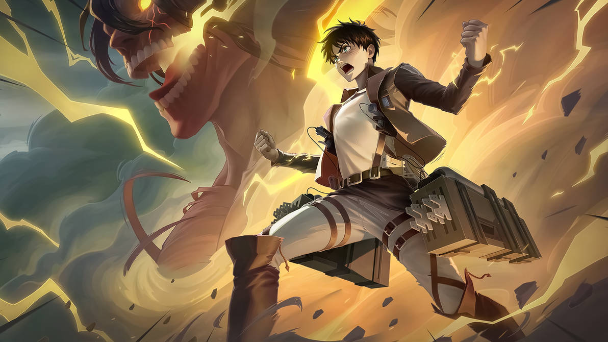

Attack on Titan – Museum HITA
Museum di Hita, Prefektur Oita, adalah tempat lahirnya Hajime Isayama, kreator manga dan anime fenomenal Attack on Titan. Museum ini tidak hanya menampilkan koleksi visual yang memukau, tetapi juga menjadi titik pertemuan antara penggemar anime dan sejarah kreatif di balik dunia Titan yang menegangkan.
Di dalam museum, pengunjung dapat menjelajahi berbagai ruangan tematik yang menghadirkan patung-patung karakter ikonik seperti Eren Yeager, Mikasa Ackerman, dan Armin Arlert. Setiap area dipenuhi dengan sketsa asli, konsep awal, dan replika tembok “The Wall” yang melindungi manusia dari serangan Titan. Diorama pertempuran paling ikonik juga ditampilkan secara detail, memberi pengalaman yang sangat imersif.
Museum ini juga menekankan sejarah pembuatan seri, mulai dari ide awal Hajime Isayama hingga adaptasi anime yang mendunia. Pengunjung dapat mempelajari teknik menggambar, desain karakter, serta proses pengembangan dunia yang kompleks dan penuh misteri.
Sinopsis Attack on Titan:
Attack on Titan bercerita tentang umat manusia yang hidup dalam tembok raksasa untuk melindungi diri dari serangan para Titan. Cerita mengikuti Eren Yeager, Mikasa Ackerman, dan Armin Arlert dalam perjuangan menghadapi ancaman Titan dan mengungkap misteri dunia.
